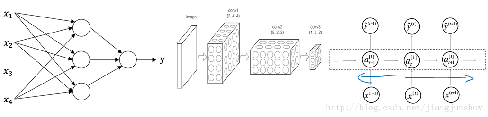

<!DOCTYPE html>
<html>
<head><meta name="generator" content="Hexo 3.8.0">
  <meta charset="utf-8">

  <!-- PACE Progress Bar START -->
  
    <script src="https://raw.githubusercontent.com/HubSpot/pace/v1.0.2/pace.min.js"></script>
    <link rel="stylesheet" href="https://github.com/HubSpot/pace/raw/master/themes/orange/pace-theme-flash.css">
  
  

  <!-- PACE Progress Bar START -->

  
  <title>人工智能初识（一）：监督学习型神经网络 | Blog of Geowind</title>
  <meta name="viewport" content="width=device-width, initial-scale=1, maximum-scale=1">
  
  <meta name="keywords" content="人工智能神经网络">
  
  
  
  
  <meta name="description" content="监督学习与非监督学习？">
<meta name="keywords" content="人工智能,神经网络">
<meta property="og:type" content="article">
<meta property="og:title" content="人工智能初识（一）：监督学习型神经网络">
<meta property="og:url" content="http://geowind.org/GeowindBlog/archives/af99dac3.html">
<meta property="og:site_name" content="Blog of Geowind">
<meta property="og:description" content="监督学习与非监督学习？">
<meta property="og:locale" content="default">
<meta property="og:image" content="http://geowind.org/GeowindBlog/assets/1_2_1.png">
<meta property="og:updated_time" content="2018-10-23T03:22:49.000Z">
<meta name="twitter:card" content="summary">
<meta name="twitter:title" content="人工智能初识（一）：监督学习型神经网络">
<meta name="twitter:description" content="监督学习与非监督学习？">
<meta name="twitter:image" content="http://geowind.org/GeowindBlog/assets/1_2_1.png">
  
    <link rel="alternate" href="/atom.xml" title="Blog of Geowind" type="application/atom+xml">
  
  <link rel="icon" href="/GeowindBlog/css/images/favicon.ico">
  
    <link href="//fonts.googleapis.com/css?family=Source+Code+Pro" rel="stylesheet" type="text/css">
  
  <link href="https://fonts.googleapis.com/css?family=Open+Sans|Montserrat:700" rel="stylesheet" type="text/css">
  <link href="https://fonts.googleapis.com/css?family=Roboto:400,300,300italic,400italic" rel="stylesheet" type="text/css">
  <link href="https://cdn.bootcss.com/font-awesome/4.6.3/css/font-awesome.min.css" rel="stylesheet">
  <style type="text/css">
    @font-face{font-family:futura-pt;src:url(https://use.typekit.net/af/9749f0/00000000000000000001008f/27/l?subset_id=2&fvd=n5) format("woff2");font-weight:500;font-style:normal;}
    @font-face{font-family:futura-pt;src:url(https://use.typekit.net/af/90cf9f/000000000000000000010091/27/l?subset_id=2&fvd=n7) format("woff2");font-weight:500;font-style:normal;}
    @font-face{font-family:futura-pt;src:url(https://use.typekit.net/af/8a5494/000000000000000000013365/27/l?subset_id=2&fvd=n4) format("woff2");font-weight:lighter;font-style:normal;}
    @font-face{font-family:futura-pt;src:url(https://use.typekit.net/af/d337d8/000000000000000000010095/27/l?subset_id=2&fvd=i4) format("woff2");font-weight:400;font-style:italic;}</style>
    
  <link rel="stylesheet" id="athemes-headings-fonts-css" href="//fonts.googleapis.com/css?family=Yanone+Kaffeesatz%3A200%2C300%2C400%2C700&amp;ver=4.6.1" type="text/css" media="all">
  <link rel="stylesheet" href="/GeowindBlog/css/style.css">

  <script src="https://code.jquery.com/jquery-3.1.1.min.js"></script>

  <!-- Bootstrap core CSS -->
  <link rel="stylesheet" href="https://netdna.bootstrapcdn.com/bootstrap/3.0.2/css/bootstrap.min.css">
  <link rel="stylesheet" href="/GeowindBlog/css/hiero.css">
  <link rel="stylesheet" href="/GeowindBlog/css/glyphs.css">
  

  <!-- Custom CSS -->
  <link rel="stylesheet" href="/GeowindBlog/css/my.css">
  <!-- Google Adsense -->
  
  <script async src="//pagead2.googlesyndication.com/pagead/js/adsbygoogle.js"></script>
  <script>
      (adsbygoogle = window.adsbygoogle || []).push({
          google_ad_client: "ca-pub-0123456789ABCDEF",
          enable_page_level_ads: true
      });
  </script>
  
</head>
</html>
<script>
var themeMenus = {};

  themeMenus["/GeowindBlog/"] = "Home"; 

  themeMenus["/GeowindBlog/archives/"] = "Archives"; 

  themeMenus["/GeowindBlog/categories/"] = "Categories"; 

  themeMenus["/GeowindBlog/tags/"] = "Tags"; 

</script>


  <body data-spy="scroll" data-target="#toc" data-offset="50">


  <header id="allheader" class="site-header" role="banner">
  <div class="clearfix container">
      <div class="site-branding">

          <h1 class="site-title">
            
              <a href="/GeowindBlog/" rel="home">
                
              </a>
            
          </h1>

          
            <div class="site-description">Everyone make a difference , Geowind Here</div>
          
            
          <nav id="main-navigation" class="main-navigation" role="navigation">
            <a class="nav-open">Menu</a>
            <a class="nav-close">Close</a>
            <div class="clearfix sf-menu">

              <ul id="main-nav" class="nmenu sf-js-enabled">
                    
                      <li class="menu-item menu-item-type-custom menu-item-object-custom menu-item-home menu-item-1663"> <a class="" href="/GeowindBlog/">Home</a> </li>
                    
                      <li class="menu-item menu-item-type-custom menu-item-object-custom menu-item-home menu-item-1663"> <a class="" href="/GeowindBlog/archives/">Archives</a> </li>
                    
                      <li class="menu-item menu-item-type-custom menu-item-object-custom menu-item-home menu-item-1663"> <a class="" href="/GeowindBlog/categories/">Categories</a> </li>
                    
                      <li class="menu-item menu-item-type-custom menu-item-object-custom menu-item-home menu-item-1663"> <a class="" href="/GeowindBlog/tags/">Tags</a> </li>
                    
              </ul>
            </div>
          </nav>


      </div>
  </div>
</header>


  <div id="originBgDiv" style="background: #fff; width: 100%;">

      <div style="max-height:600px; overflow: hidden;  display: flex; display: -webkit-flex; align-items: center;">
        
      </div>

  </div>

  <script>
  function setAboutIMG(){
      var imgUrls = "css/images/pose.jpg,https://source.unsplash.com/collection/954550/1920x1080".split(",");
      var random = Math.floor((Math.random() * imgUrls.length ));
      if (imgUrls[random].startsWith('http') || imgUrls[random].indexOf('://') >= 0) {
        document.getElementById("originBg").src=imgUrls[random];
      } else {
        document.getElementById("originBg").src='/GeowindBlog/' + imgUrls[random];
      }
  }
  bgDiv=document.getElementById("originBgDiv");
  if(location.pathname.match('about')){
    setAboutIMG();
    bgDiv.style.display='block';
  }else{
    bgDiv.style.display='none';
  }
  </script>


  <div id="container">
    <div id="wrap">
            
      <div id="content" class="outer">
        
          <section id="main" style="float:none;"><article id="post-人工智能初识（一）：监督学习型神经网络" style="width: 66%; float:left;" class="article article-type-post" itemscope="" itemprop="blogPost">
  <div id="articleInner" class="clearfix post-1016 post type-post status-publish format-standard has-post-thumbnail hentry category-template-2 category-uncategorized tag-codex tag-edge-case tag-featured-image tag-image tag-template">
    
    
      <header class="article-header">
        
  
    <h1 class="thumb" itemprop="name">
      人工智能初识（一）：监督学习型神经网络
    </h1>
  

      </header>
    
    <div class="article-meta">
      
	Posted on <a href="/GeowindBlog/archives/af99dac3.html" class="article-date">
	  <time datetime="2018-10-23T03:22:49.000Z" itemprop="datePublished">October 23, 2018</time>
	</a>

      
	<span id="busuanzi_container_page_pv">
	  本文总阅读量<span id="busuanzi_value_page_pv"></span>次
	</span>

    </div>
    <div class="article-entry" itemprop="articleBody">
      
        <p>监督学习与非监督学习？<br><a id="more"></a></p>
<h1 id="人工智能初识（一）：监督学习型神经网络"><a href="#人工智能初识（一）：监督学习型神经网络" class="headerlink" title="人工智能初识（一）：监督学习型神经网络"></a>人工智能初识（一）：监督学习型神经网络</h1><hr>
<blockquote>
<p>原文转载：<a href="https://blog.csdn.net/jiangjunshow/article/details/77373847" target="_blank" rel="noopener">https://blog.csdn.net/jiangjunshow/article/details/77373847</a></p>
</blockquote>
<h2 id="有监督学习和无监督学习"><a href="#有监督学习和无监督学习" class="headerlink" title="有监督学习和无监督学习"></a>有监督学习和无监督学习</h2><p>什么是监督学习？<br>简单的回答是：判断是否是监督学习，就看输入数据是否有标签。输入数据有标签，则为有监督学习，没标签则为无监督学习。</p>
<p>要详细解释什么是监督学习，那么先要明白“什么是学习？”。一个成语就可概括：举一反三。此处以高考为例，高考的题目在上考场前我们未必做过，但在高中三年我们做过很多很多题目，由此学会了解题方法，因此考场上面对陌生问题也可以算出答案。机器学习的思路也类似：我们利用一些训练数据（高中的大量题库），使机器能够总结出一些规律（总结出解题方法），然后用这些规律来分析未知数据（用解题方法来解答高考题目）。</p>
<h2 id="分类与聚类"><a href="#分类与聚类" class="headerlink" title="分类与聚类"></a>分类与聚类</h2><p>分类（classification）这种机器学习算法就是一种监督学习。对于分类，输入的训练数据有特征（feature），有标签（label）。也就是我们前面文章中的输入x和输出y。每一个x样本都对应着一个y（输出）标签。所谓的学习，其本质就是找到特征和标签间的关系（mapping），也就是找规律。这样当有特征而无标签的未知数据输入时，我们就可以通过已有的关系得到未知数据标签，即根据新数据进行预测。在上述的分类过程中，如果所有训练数据都有标签，则为有监督学习（supervised learning）。如果数据没有标签，显然就是无监督学习（unsupervised learning），即聚类（clustering）。</p>
<h2 id="监督学习型神经网络实现"><a href="#监督学习型神经网络实现" class="headerlink" title="监督学习型神经网络实现"></a>监督学习型神经网络实现</h2><p>但到目前为止，几乎所有由人工智能创造的经济价值都是通过监督学习型神经网络实现的。例如广告预测，这可能是最有利可图的人工智能应用了,它也许不是最鼓舞人心的,但肯定是非常有利可图的,通过输入一些关于用户的信息x,神经网络就能预测你是否会点击某个广告（给出输出y来指示某个广告），所以当你看到你朋友，或男朋友，或女朋友手机电脑上面都是些黄色广告时，你基本上可以断定TA的“性趣很浓”，也之所以我一般不会给别人用我的手机或电脑。计算机视觉在过去几年也取得了很大的进步，主要是由于深度学习。您可以输入人脸图像，神经网络会给出这个人的姓名。在语音识别方面的进展也非常激动人心，我们可以输入一段音频到神经网络，相应的文字就被输出来了。机器翻译也取得了巨大的进步，你可以输入英文句子，直接输出中文句子。在自动驾驶中，您可以输入车辆前方的图片以及雷达中的一些信息，基于此，神经网络将告诉您其它汽车的位置（这是自动驾驶系统的关键组成部分）。因此，通过神经网络进行的许多价值创造当前都是通过监督学习来实现的——巧妙地构造数据集，选择什么应该是x，什么应该是y，然后让神经网络来学习这个数据集。</p>
<h2 id="结构分类神经网络"><a href="#结构分类神经网络" class="headerlink" title="结构分类神经网络"></a>结构分类神经网络</h2><p>另外再补充些知识点。神经网络除了按监督学习和非监督学习来分类外，还按结构来分类。不同结构的神经网络被用于不同的应用程序中。例如，在之前看到的房价预测应用中，我们使用的是标准的神经网络结构，广告预测也是一个相对标准的神经网络。对于图像应用程序，我们经常使用卷积神经网络CNN。对于序列数据应用程序一般使用递归神经网络RNN（例如音频就属于序列数据，是随着时间一段一段表述的，例如英语、汉语都是随着时间一个字一个单词来表述的）。对于更复杂的应用，比如自动驾驶，里面有图像所以需要CNN卷积神经网络，而雷达信息则需要其它类型的神经网络，这就导致了混合的神经网络架构。<br><br>为了更具体一点，上面分别给出了各种不同神经网络的结构图。依次是，标准神经网络SNN, 卷积神经网络CNN，递归神经网络RNN。稍后我会解释这些图的含义以及如何实现它。卷积网络通常被用于图像数据。递归神经网络被用于序列数据。</p>
<p>你也可能听说过机器学习中将数据分为结构化数据和非结构化数据。结构化数据主要表示数据库数据。例如，在房价预测中，您可能会有一个数据库告诉您卧室的大小和数量。又如预测用户是否点击广告时，您可能会获得有关用户的信息，例如年龄，广告的一些信息。所谓结构化数据，意味着每个特征，如房子的大小，卧室的数量或用户的年龄，是具有非常明确的含义的。相比之下，非结构化数据指的是音频，图像。这里的特征可能是图像中的像素值或文本中的单个单词，没有明确的含义。与结构化数据相比，计算机更难以理解非结构化数据。而人类已经进化得非常善于理解音频和图像这些非结构化数据。但这一两年由于深度学习的兴起，计算机对非结构化的理解能力越来越强了。人们在听到有关神经网络对非结构化数据的成功时，例如当神经网络识别出一只猫时，人们都很兴奋。但事实证明，神经网络正在创造的许多短期经济价值其实是在结构化数据上的，比如广告系统。所以在这个课程中，我将介绍的很多技术都将适用于结构化数据和非结构化数据。为了解释算法，在示例中我将会更多的使用非结构化数据。但是，将来在您自己的团队中应用神经网络时，我希望您应该对结构化和非结构化数据都重视。</p>

      
    </div>
    <footer class="entry-meta entry-footer">
      
	<span class="ico-folder"></span>
    <a class="article-category-link" href="/GeowindBlog/categories/人工智能初识/">人工智能初识</a>, <a class="article-category-link" href="/GeowindBlog/categories/人工智能初识/（一）/">（一）</a>

      
  <span class="ico-tags"></span>
  <ul class="article-tag-list"><li class="article-tag-list-item"><a class="article-tag-list-link" href="/GeowindBlog/tags/人工智能/">人工智能</a></li><li class="article-tag-list-item"><a class="article-tag-list-link" href="/GeowindBlog/tags/神经网络/">神经网络</a></li></ul>

      
            
      
        
	<div id="comment">
		<!-- 来必力City版安装代码 -->
		<div id="lv-container" data-id="city" data-uid="MTAyMC8yOTQ4MS82MDQ5">
		<script type="text/javascript">
		   (function(d, s) {
		       var j, e = d.getElementsByTagName(s)[0];

		       if (typeof LivereTower === 'function') { return; }

		       j = d.createElement(s);
		       j.src = 'https://cdn-city.livere.com/js/embed.dist.js';
		       j.async = true;

		       e.parentNode.insertBefore(j, e);
		   })(document, 'script');
		</script>
		<noscript>为正常使用来必力评论功能请激活JavaScript</noscript>
		</div>
		<!-- City版安装代码已完成 -->
	</div>


      
    </footer>
  </div>
  
    
<nav id="article-nav">
  
  
    <a href="/GeowindBlog/archives/1ece966.html" id="article-nav-older" class="article-nav-link-wrap">
      <strong class="article-nav-caption">Older</strong>
      <div class="article-nav-title">人工智能初识（一）：什么是神经网络</div>
    </a>
  
</nav>

  
</article>

<!-- Table of Contents -->

  <aside id="sidebar">
    <div id="toc" class="toc-article">
    <strong class="toc-title">Contents</strong>
    
      <ol class="nav"><li class="nav-item nav-level-1"><a class="nav-link" href="#人工智能初识（一）：监督学习型神经网络"><span class="nav-number">1.</span> <span class="nav-text">人工智能初识（一）：监督学习型神经网络</span></a><ol class="nav-child"><li class="nav-item nav-level-2"><a class="nav-link" href="#有监督学习和无监督学习"><span class="nav-number">1.1.</span> <span class="nav-text">有监督学习和无监督学习</span></a></li><li class="nav-item nav-level-2"><a class="nav-link" href="#分类与聚类"><span class="nav-number">1.2.</span> <span class="nav-text">分类与聚类</span></a></li><li class="nav-item nav-level-2"><a class="nav-link" href="#监督学习型神经网络实现"><span class="nav-number">1.3.</span> <span class="nav-text">监督学习型神经网络实现</span></a></li><li class="nav-item nav-level-2"><a class="nav-link" href="#结构分类神经网络"><span class="nav-number">1.4.</span> <span class="nav-text">结构分类神经网络</span></a></li></ol></li></ol>
    
    </div>
  </aside>
</section>
        
      </div>
      <footer id="footer" class="site-footer">
  

  <div class="clearfix container">
      <div class="site-info">
	      &copy; 2018 Blog of Geowind All Rights Reserved.
          
            <span id="busuanzi_container_site_uv">
              本站访客数<span id="busuanzi_value_site_uv"></span>人次  
              本站总访问量<span id="busuanzi_value_site_pv"></span>次
            </span>
          
      </div>
      <div class="site-credit">
        Theme by <a href="https://github.com/iTimeTraveler/hexo-theme-hiero" target="_blank">hiero</a>
      </div>
  </div>
</footer>


<!-- min height -->

<script>
    var contentdiv = document.getElementById("content");

    contentdiv.style.minHeight = document.body.offsetHeight - document.getElementById("allheader").offsetHeight - document.getElementById("footer").offsetHeight + "px";
</script>

<!-- Custome JS -->
<script src="/GeowindBlog/js/my.js"></script>
    </div>
    <!-- <nav id="mobile-nav">
  
    <a href="/GeowindBlog/" class="mobile-nav-link">Home</a>
  
    <a href="/GeowindBlog/archives/" class="mobile-nav-link">Archives</a>
  
    <a href="/GeowindBlog/categories/" class="mobile-nav-link">Categories</a>
  
    <a href="/GeowindBlog/tags/" class="mobile-nav-link">Tags</a>
  
</nav> -->
    

<!-- mathjax config similar to math.stackexchange -->

<script type="text/x-mathjax-config">
  MathJax.Hub.Config({
    tex2jax: {
      inlineMath: [ ['$','$'], ["\\(","\\)"] ],
      processEscapes: true
    }
  });
</script>

<script type="text/x-mathjax-config">
    MathJax.Hub.Config({
      tex2jax: {
        skipTags: ['script', 'noscript', 'style', 'textarea', 'pre', 'code']
      }
    });
</script>

<script type="text/x-mathjax-config">
    MathJax.Hub.Queue(function() {
        var all = MathJax.Hub.getAllJax(), i;
        for(i=0; i < all.length; i += 1) {
            all[i].SourceElement().parentNode.className += ' has-jax';
        }
    });
</script>

<script type="text/javascript" src="https://cdnjs.cloudflare.com/ajax/libs/mathjax/2.7.4/MathJax.js?config=TeX-AMS-MML_HTMLorMML">
</script>


  <link rel="stylesheet" href="https://cdnjs.cloudflare.com/ajax/libs/fancybox/2.1.5/jquery.fancybox.min.css">
  <script src="https://cdnjs.cloudflare.com/ajax/libs/fancybox/2.1.5/jquery.fancybox.min.js"></script>


<script src="/GeowindBlog/js/scripts.js"></script>
<script src="https://stackpath.bootstrapcdn.com/bootstrap/3.3.7/js/bootstrap.min.js"></script>
<script src="/GeowindBlog/js/main.js"></script>


  <div style="display: none;">
    <script src="https://s95.cnzz.com/z_stat.php?id=1260716016&web_id=1260716016" language="JavaScript"></script>
  </div>


	<script async src="https://dnqof95d40fo6.cloudfront.net/atw7f8.js">
	</script>


  </div>

  <a id="rocket" href="#top" class=""></a>
  <script type="text/javascript" src="/js/totop.js" async=""></script>
</body>
</html>
